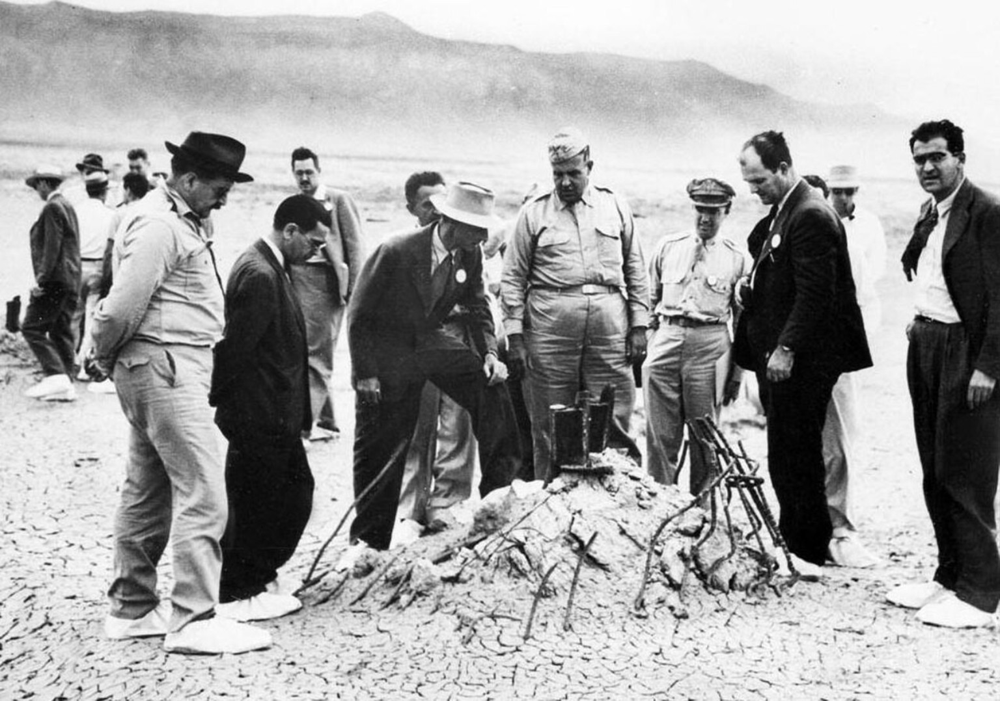
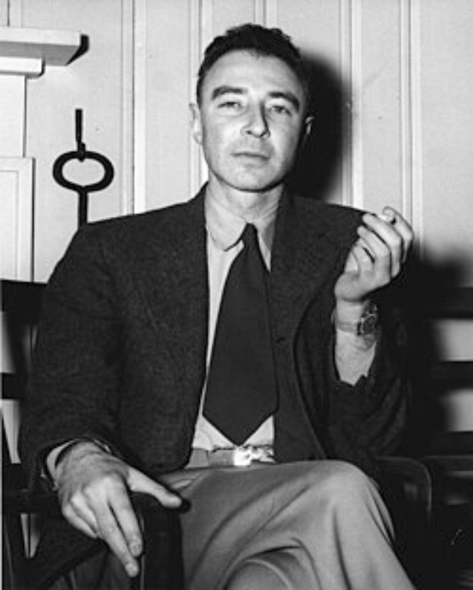
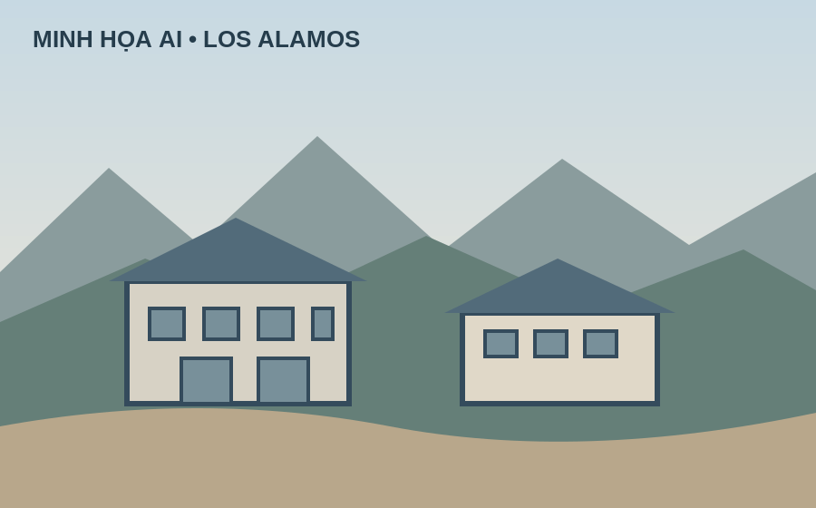
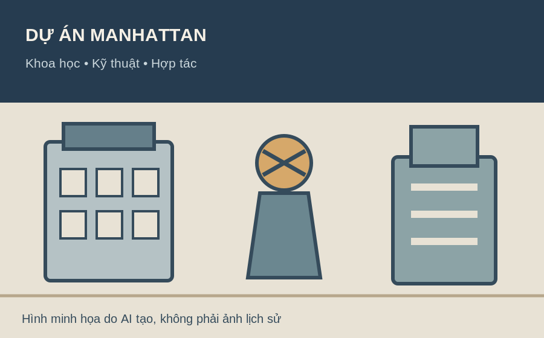
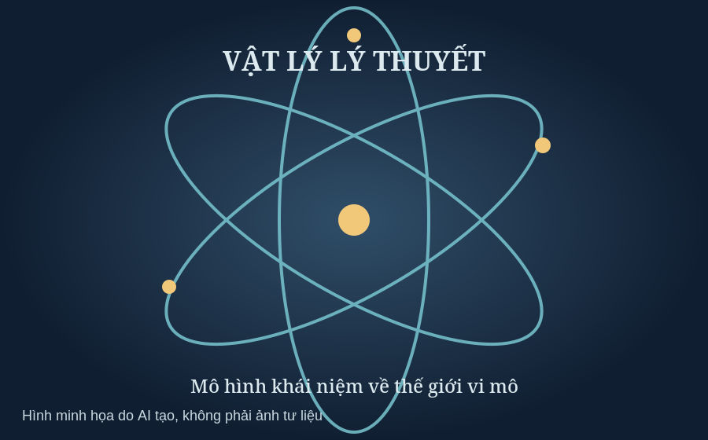
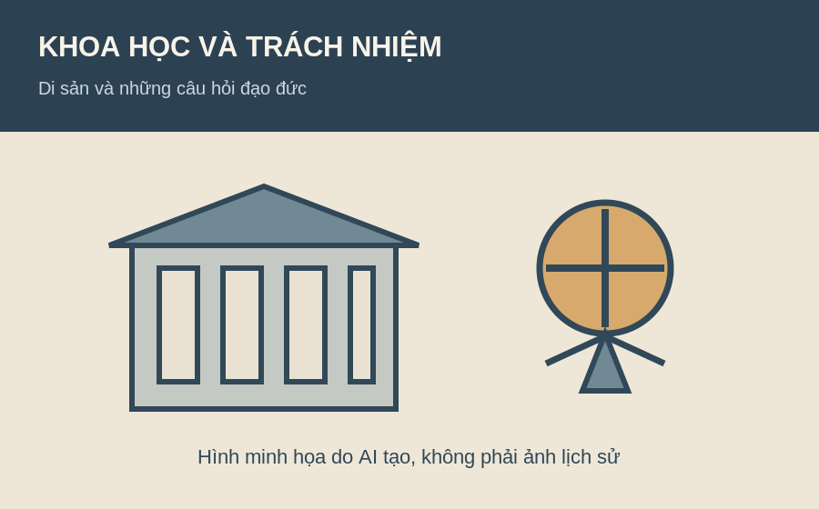

Thư viện hình ảnh và nguồn tham khảo
Thư viện có 8 hình: 4 ảnh tư liệu JPG được lưu cục bộ và 4 hình minh họa SVG được lưu cùng website. Hình minh họa được ghi rõ là minh họa, không phải ảnh lịch sử thật. Các ảnh tư liệu có liên kết nguồn để người đọc kiểm tra thông tin và giấy phép.






Lưu ý: Bản này gồm 4 ảnh tư liệu thật được lưu cục bộ và 4 hình minh họa SVG. Hình minh họa không được tính là ảnh tư liệu lịch sử. Nhóm cần kiểm tra giấy phép trên trang nguồn của từng ảnh tư liệu trước khi nộp.
Nguồn thông tin đáng tin cậy
- Encyclopaedia Britannica — J. Robert Oppenheimer
- Institute for Advanced Study — Viện Nghiên cứu Cao cấp
- Atomic Heritage Foundation — tư liệu lịch sử Dự án Manhattan
- U.S. Department of Energy — Bộ Năng lượng Hoa Kỳ
- U.S. National Archives — tài liệu lưu trữ quốc gia Hoa Kỳ
- Wikimedia Commons — tư liệu hình ảnh, cần kiểm tra giấy phép từng tệp
Danh sách này là điểm bắt đầu nghiên cứu. Hãy mở từng nguồn, tìm đúng bài viết hoặc tài liệu đã sử dụng và ghi ngày truy cập nếu giáo viên yêu cầu.
Bảng phân công nhiệm vụ nhóm
Bảng dưới đây là phương án phân công dự kiến của nhóm. Hai thành viên cần thống nhất và điều chỉnh theo công việc thực tế trước khi nộp sản phẩm.
| Thành viên | Công việc chính | Công việc phụ / hỗ trợ |
|---|---|---|
| Nguyễn Minh Khang | Thiết kế và xây dựng website bằng HTML, CSS; tổ chức cấu trúc 8 trang và thanh điều hướng. | Kiểm tra giao diện, sửa lỗi hiển thị, rà soát liên kết và cấu hình xuất bản trên GitHub Pages. |
| Tăng Đăng Khiêm | Tìm kiếm, chọn lọc và biên soạn nội dung về cuộc đời, hành trình khoa học, thành tựu, thử thách và di sản của J. Robert Oppenheimer. | Tìm hình ảnh, video và nguồn tham khảo đáng tin cậy; kiểm tra chú thích, trích dẫn và hỗ trợ rà soát nội dung website. |
Nguyên tắc phối hợp: Hai thành viên cùng trao đổi ý tưởng, kiểm tra độ chính xác của thông tin và rà soát sản phẩm trước khi nộp. Hãy điều chỉnh bảng này nếu nhiệm vụ thực tế của nhóm có thay đổi.
Checklist trước khi nộp
- Đã kiểm tra đủ 8 trang HTML và thanh menu trên mọi trang.
- Đã bổ sung ít nhất 8 ảnh có chú thích và nguồn.
- Đã thêm video hoặc nội dung nhúng phù hợp.
- Đã kiểm tra bảng, danh sách, liên kết nội bộ và liên kết ngoài.
- Đã đọc lại nội dung, xác minh dữ kiện và hoàn thiện cảm nhận cá nhân.
- Đã thay thông tin mẫu bằng tên thành viên thật và phân công chính xác.